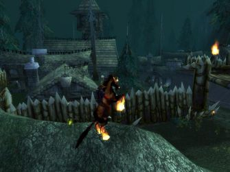

Les Terres de Kirin Tor
Arkhayn
Points : 4
Joué par :
[ Information masquée ]
Age : 25
Lieu de naisance : Stormwind
Sexe : Homme
Race : Humain
Faction : Alliance
Formation : Démoniste
Niveau : 44
Guilde : Grand Rêve (le)
Artisanat 1 : Couturier
Artisanat 2 : Enchanteur
Envoyer un MP
Informations hrp : Démoniste suicidaire, ayant des pulsions intenses qui l'entrainent vers sa mort la plus proche, que ce soit une petite mare ou un élite 62 ...
Ère du Conflit [2]
Lune de la Force
Décade du Panda
Décade du Gorille
Décade de l'Ours
Lune d'Agilité
Décade du Tigre
Décade du Singe
Décade du Faucon
Lune de l'Esprit [2]
Décade de la Chouette
Décade de la Baleine [1]
La première mort
Stormwind..calme et paisible, comme à son habitude...
mais approchons nous d'avantage... dans les recoins sombre de la ville lumineuse se passe beaucoup de remous.
" - Nindudjou ! c'est quoi ca ! Ikran ! viens voir..on dirait qu'un démon traine derrière lui un spèce de gros truc !
- Etran... reviens tu vas prendre froid, je te rappelle que tu es en caleçon de soie...
- mais Ikran, j'te dis que ...
- Etran, ici ! "
le petit diablotin ne pensait pas qu'on le verrait en pleine nuit...
Ruploz : [démoniaque] iku luiaat kuiil HAKA ! hakaa! hakaa !
un diablotin tirant le corps d'un homme mort n'est en effet que très difficile à expliquer...surtout quand on est le serviteur d'un démoniste suicidaire..
Décade du Lapin [1]
Purification
les terres de l'ouest...deux heures du matin ...
la végétation est brulée par les sabots maudits d'un palefroi...mais cela n'a pas d'importance...
ces trolls ne verront pas le jour se lever.
les démons l'ont ordonné, la mort sur les abérations.
je pensais qu'il seraient mes serviteurs, je m'en rend compte maintenant...je suis à leur service.
je crois que mon humanité s'envole peu à peu à chaque invocation ..